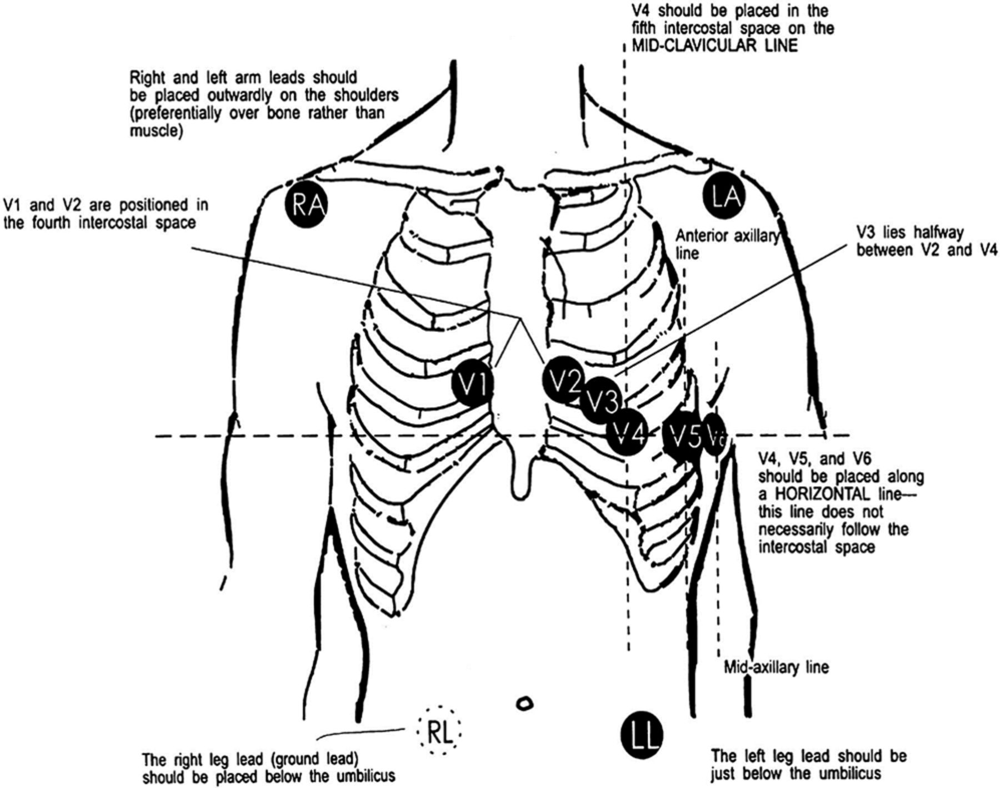
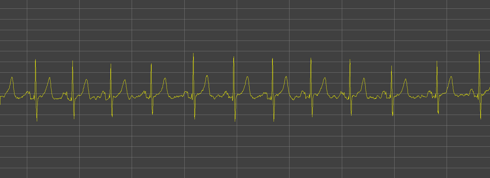
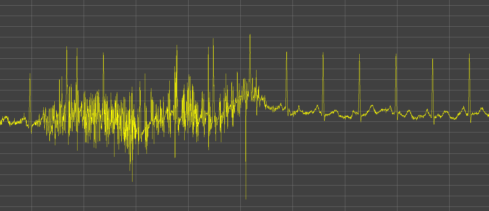
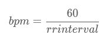
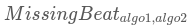
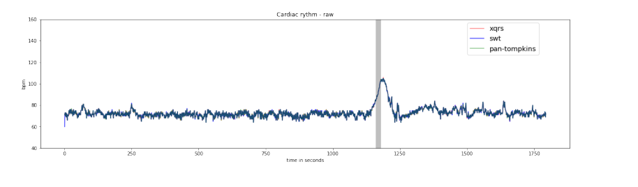

Machine Learning Applied to Epileptic Seizure Detection 🧠💡
The Aura association is leading an open and collaborative initiative to develop a connected patch to detect epileptic seizures.
To design this detection system, we're studying a relevant biomarker: The ECG - Electrocardiogram signal.
An Open Database 📊
We're building our seizure detection model using an open database: TUH Seizure Corpus (TUSZ) v1.5.1.
This 67GB database records the electrophysiological activities (electroencephalogram, electrocardiogram) of 692 patients during 5610 examinations for a total duration of 1074 hours.
A team of neurologists reviewed these recordings and annotated nearly 3500 epileptic seizures. We'll train our model based on this binary annotation (background or seizure).
Note
Seizure time represents only 7% of the total recording time. We'll need to account for this class imbalance (background/crisis) when training the crisis detection algorithm.
For more information about this database and the research team behind it, click here.
Database Structure
The original database is structured as follows:
─ dev // Dataset split into dev/testing/validation
│ ├── 01_tcp_ar // Montage type used for EEG recording
│ │ ├── 002
│ │ │ └── 00000258 // Patient folder
│ │ │ ├── s002_2003_07_21 // Recording Session folder
│ │ │ │ ├── 00000258_s002_t000.json // A single EEG/ECG recording
│ │ │ │ └── 00000258_s002_t002.json
│ │ │ └── s003_2003_07_22
│ │ │ ├── 00000258_s003_t000.json
│ │ │ ├── 00000258_s003_t001.json
│ │ │ ├── 00000258_s003_t002.json
│ │ │ ├── 00000258_s003_t003.json
... ...
Preprocessing the Heart Signal ❤️
We've performed initial processing on this large, complex volume of data, focusing solely on the ECG signal.
ECG Signal
Electrocardiography (ECG) graphically represents the heart's electrical activity. In our case, it's measured using 2 electrodes placed on the left and right of the torso (V1 and V2 in the diagram below):
 ECG electrodes. Source: American Heart Association
Here's an example of a standard ECG record:
 ECG standard. Source: https://ya-webdesign.com
ECG standard. Source: https://ya-webdesign.com
Warning
In real-life conditions, this signal is often noisy due to muscle movement artifacts or electrode contact issues, complicating analysis.
Examples of noisy ECG signals:
 ECG low noise
 ECG mid noise
ECG mid noise
 ECG high noise
R-R Intervals
Epileptic seizures can lead to disturbances in the autonomous nervous system, resulting in heart rhythm disorders (tachycardia, bradycardia, etc.).
These disorders are studied through R-R interval analysis. An R-R interval represents the duration of one heartbeat, corresponding to the time between 2 R peaks of the ECG signal:
 R-R interval. Source: https://ya-webdesign.com
R-R interval. Source: https://ya-webdesign.com
There's a direct link between heart rate and R-R interval:

Extracting R-R Intervals from ECG Signal
We use standard "QRS complex detection" algorithms to extract R-R intervals from the ECG signal. We've chosen three robust implementations:
- Pan Tompkins
- Stationary Wavelet (swt)
- XQRS
We compare these methods using two metrics:
-
Correlation coefficient:
 (0 = totally different results, 1 = perfect correlation)
(0 = totally different results, 1 = perfect correlation) -
Missing beats:  (Lower is better)
Available Data
R-R interval data and robustness metrics are stored in JSON files in the res-v0_4 folder. Here's the format:
{
"infos": {
"sampling_freq": 400,
"start_datetime": "2003-07-21T17:12:54",
"exam_duration": 20,
"ref_file": "00000258_s002_t000.edf"
},
"pan-tompkins": {
"qrs": [...],
"rr_intervals": [652.5, ..., 800],
"hr": [91.0, ...]
},
"swt": {...},
"xqrs": {...},
"score": {
"corrcoefs": [[1, 0.3287671232876712, 0.40540540540540543],
[0.3287671232876712, 1, 0.8524590163934426],
[0.40540540540540543, 0.8524590163934426, 1]],
"matching_frames": [[43, 12, 15], [12, 30, 26], [15, 26, 31]],
"missing_beats_duration": [[0, 0.0, 0.0],
[0.0, 0, 0.0],
[0.0, 0.0, 0]]
}
}
Example heart rate representation:
 Heart rate displayed for a 30-minute exam
Database Annotations 🏷️
The database includes binary annotations: - background - seizure
Annotations are formatted as intervals with start and end times relative to the examination start.
Available Annotation Data
Annotation data is stored in JSON files in the annot-v0_4 folder. Format:
Calculating Relevant Medical Indicators (Features) 📊
We extract business features from R-R intervals based on three categories: - Time domain indicators - Frequency domain indicators - Non-linear indicators
We divide each examination into 10-second intervals and calculate 28 indicators with associated labels.
Info
- Time domain indicators: 10-second sliding window
- Frequency domain indicators: 2min30 (150 seconds) sliding window
- Non-linear indicators: 1min30 sliding window
 Computation windows for different indicators
Computation windows for different indicators
Indicators list:
FEATURES_KEY_TO_INDEX = {
'interval_index': 0,
'interval_start_time': 1,
'mean_nni': 2,
// ... (other indicators)
'label': 29
}
For detailed information on these indicators, click here.
Available Feature Data
Feature data is stored in JSON files in the feats-v0_4 folder, with one file per R-R interval calculation method. Format:
{
"keys": ["interval_index", "interval_start_time", "mean_nni", ...],
"features": [
[0.0, 0.0, 595.859375, ...],
[1.0, 10000.0, NaN, ...],
...
]
}
The Seizure Detection System 🚀
It's your turn now! Use this preprocessed data to build and train your seizure detection model.